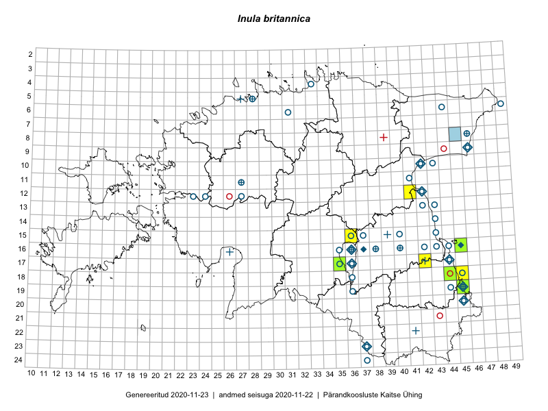

Inula britannica
Uuendatud: 2016-12-02
Kaardile koondatud taksonid: Inula britannica L.

Kaart põhineb 8 kirjel, neist vaatlusi 7 ja eksemplare 1. Taksonit on leitud 6 ruudust.
Viited andmebaasikirjetele
- Toomas Kukk, Kersti Tambets, Sten Mander, Janika Sammasto, Timo Luhamäe: 2014-07-29: 18-45: ala
- Toomas Kukk, Eerik Leibak: 2015-07-29: 16-45: ala
- Toomas Kukk, Eerik Leibak: 2015-07-29: 16-45: GPS punkt
- Toomas Kukk, Timo Luhamäe, Kersti Tambets, Sten Mander, Janika Sammasto: 2014-07-29: 19-45: ala
- Kirsi Loide, Marje Loide: 2015-07-27: 17-42: ala
- Meeli Mesipuu, Toivo Sepp, Susanna Vain: 2016-07-20: 17-35: ala
- Meeli Mesipuu, Toivo Sepp, Susanna Vain: 2016-07-20: 17-35: GPS punkt
- Peedu Saar: 2015-07-04: 18-44: GPS punkt